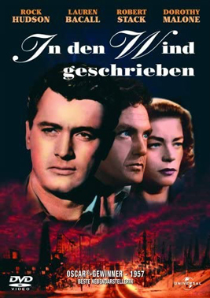
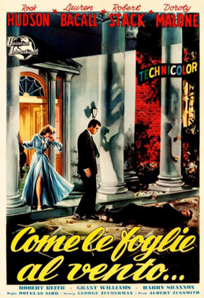
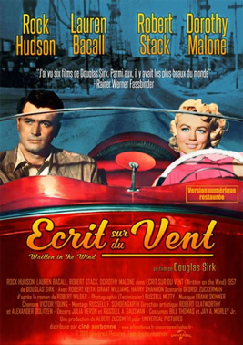

Written on the Wind
Dorothy Porter
SYNOPSIS
When two friends fall for the same woman, there's bound to be trouble. Kyle Hadley and Mitch Wayne grew up together and have been best friends all of their lives. Kyle hasn't accomplished a great deal with his life however. He is the son of a millionaire oilman and has spent most of his time carousing in his private airplane and drinking. Mitch on the other comes from a poor family but has worked hard and now works as a geologist for Hadley Oil. When they meet secretary Lucy Moore, it is Kyle who sweeps her off her feet. For a year or so he stops drinking and all is well but when his doctor tells him he may never father children, he again begins to drink heavily. Mitch is also in love with Lucy but hides his true feelings and throughout these difficult times is pursued by Kyle's free-spirited and wild younger sister Marylee. When Lucy becomes pregnant Kyle is convinced that she has been having an affair with Mitch and sets out to get his revenge.
The screenplay by George Zuckerman was based on Robert Wilder's 1946 novel of the same title, a thinly disguised account of the real-life scandal involving torch singer Libby Holman and her husband, tobacco heir Zachary Smith Reynolds, who was killed under mysterious circumstances at his family estate in 1932. A film version of the novel was optioned by RKO Pictures and International Pictures in 1946, but the project was shelved due to threats from the Reynolds family. Universal Pictures acquired the rights to the novel after absorbing International Pictures, and began developing the film in 1955. Zuckerman made numerous alterations in his screenplay to avoid lawsuits from the Reynolds family, among them shifting the setting from North Carolina to Texas, and having the family fortune originate in oil rather than tobacco.
Lauren Bacall, whose film career was foundering in the mid-1950s, accepted the relatively unflashy role of Lucy Moore at the behest of her husband, Humphrey Bogart. At the same time she was shooting the film, she was preparing for a television adaptation of Noël Coward's Blithe Spirit, co-starring Coward and Claudette Colbert. Dorothy Malone, a brunette previously best known as the brainy bespectacled bookstore clerk in a scene with Humphrey Bogart in The Big Sleep (1946), had more recently played small supporting roles in a long string of B movies. For this film, she dyed her hair platinum blonde to shed her "nice girl" image and portray the obsessive Marylee Hadley. Her Oscar-winning performance finally gave her cachet in the film industry. Robert Stack felt the primary reason he lost the Oscar to Anthony Quinn (whose winning performance in Lust for Life was no more than 25 minutes long) was that 20th Century Fox, which had lent him to Universal-International, organised block voting against him to prevent one of its contract players from winning an acting award while working at another studio.This was the sixth of eight films Douglas Sirk made with Rock Hudson, and the most successful. The next year, Sirk reunited key cast members Hudson, Stack, and Malone for The Tarnished Angels, a film about early aviators based on William Faulkner's novel Pylon.
Principal photography began on November 28, 1955 in Los Angeles on the Universal Studios lot. The sequence set at Manhattan's 21 Club was reconstructed on the Universal lot using photographs and dressed with actual paraphernalia from the restaurant, such as napkins and other items lent by the club owners. The staircase set featured in the film as the Hadleys' home had also been used in Universal's 1925 film version of The Phantom of the Opera, as well as the 1936 film My Man Godfrey.


